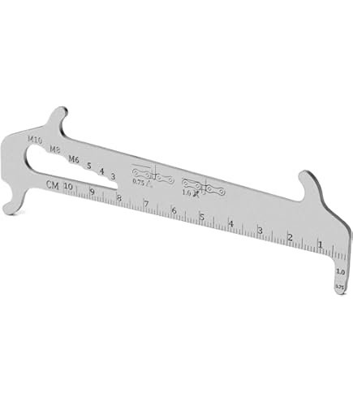

Una catena usurata può rovinare la trasmissione e causare problemi durante il cambio marcia. Per sapere se è ora di sostituirla, si usa un attrezzo chiamato misuratore d’usura catena. Basta inserirlo tra le maglie della catena: se entra completamente nello spazio indicato "0.75" o "1.0", è tempo di cambiarla.
Per un cambio preciso e fluido è importante che il deragliatore sia ben regolato. Ecco le tre regolazioni fondamentali:
Sul cambio posteriore trovi due piccole viti, spesso marcate con le lettere H (high) e L (low).
Se il cambio è lento a salire o scendere di marcia, prova a regolare il registro filettato (barilotto) vicino alla leva del cambio. Girandolo in senso antiorario aumenti la tensione del cavo, in senso orario la riduci. Regola finché il cambio risponde in modo preciso a ogni scatto. Se il cambio fa fatica ad andare sui rapporti più agili devi tensionare il cavo. Se la catena passa senza problemi sui rapporti più agili (cioè quelli con i pignoni più grandi) ma quando cambi per salire sui rapporti più duri (pignoni più piccoli) il cambio non è preciso o sembra “incerto”, potrebbe esserci un problema con il cavo interno del cambio. Con il tempo, infatti, il cavo può usurarsi, arrugginirsi o accumulare sporco, diventando meno scorrevole all’interno della guaina. Questo impedisce una tensione corretta e un movimento fluido del deragliatore, causando cambi di marcia lenti o imprecisi. La soluzione in questo caso è sostituire il cavo interno e, se necessario, anche la guaina. Una volta montato un cavo nuovo e ben lubrificato, il cambio tornerà a rispondere prontamente e le marce saranno più precise e affidabili.
Cambiare solo la catena senza sostituire anche i pignoni o le corone MOLTO usurate può causare problemi: la catena "salta", fa rumori metallici e può slittare sotto sforzo. Questo succede perché la catena nuova non si incastra perfettamente nei denti consumati dei pignoni. Se dopo il cambio catena hai questi sintomi per molte uscite in bici, è probabile che anche il pacco pignoni o la corona anteriore vadano sostituiti.
← Torna indietro